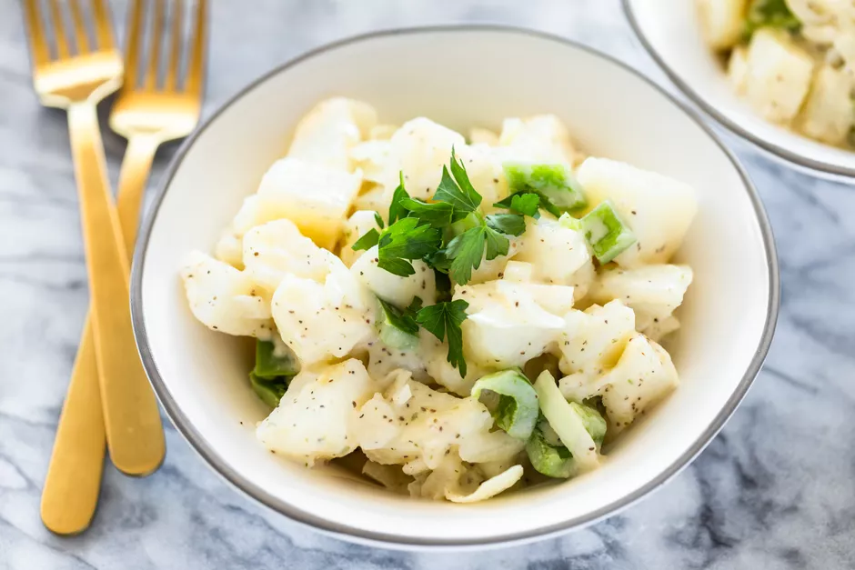

Potato Salad

Description
In the mood for some creamy to go along side your main dish? Do you like potatos? Then this potato salad recipe might just be exactly what you need.
Laid out below is a step by step guide for you to follow along with at home
Ingredients
- 3 lbs potatoes
- 1 large green pepper
- 1 chopped onion
- 1 cup mayonnaise
- 1/3 cup apple cider vinegar
- 1 teaspoon onion salt
- Freshly ground black pepper
Stpes:
- Peel and cut the potoatoes into cubes. Cook in boiling water for around 15 minutes. Chop the green pepper and onions.
- In a large bowl, combine the potatoes, green pepper and onion.
- In a seperate bowl, mix the mayo, vinegar, onion salt and black pepper together.
- Add the mayo mixture with the potato cubes and let it chill in the fridge.